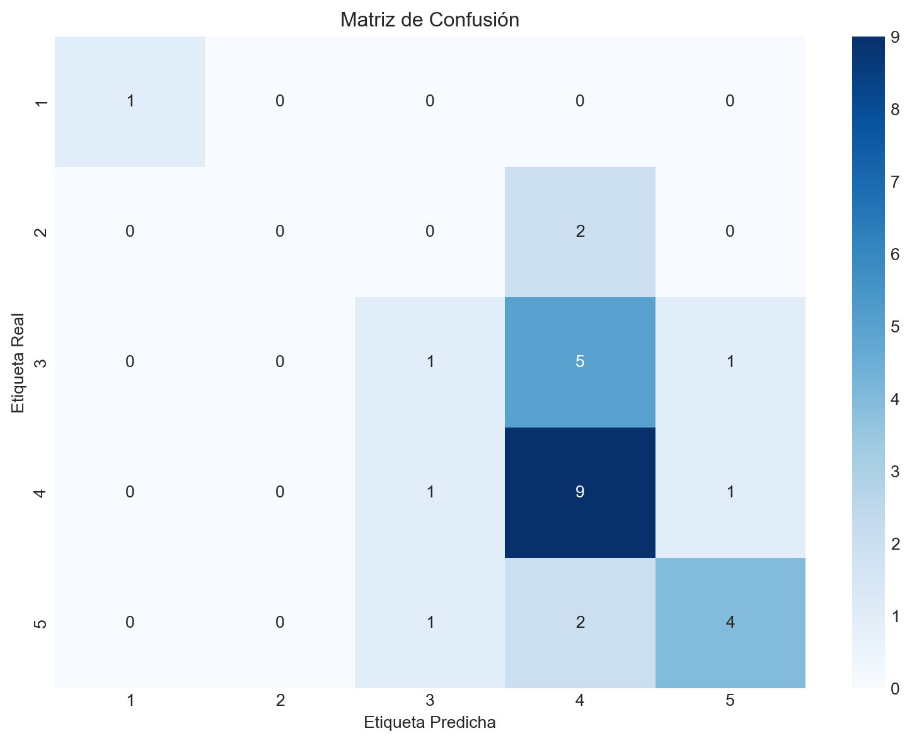

Este documento presenta un análisis completo de regresión lineal utilizando el dataset AcademicStressLevel.csv. Utilizaremos Pipeline de scikit-learn para crear un flujo de trabajo robusto y reproducible.
1. Importar Librerías
Primero importamos todas las librerías necesarias para el análisis.
Code
# Librerías para manipulación de datosimport pandas as pdimport numpy as np# Librerías para visualizaciónimport matplotlib.pyplot as pltimport seaborn as sns# Librerías de scikit-learnfrom sklearn.pipeline import Pipelinefrom sklearn.preprocessing import StandardScalerfrom sklearn.model_selection import train_test_split, cross_val_scorefrom sklearn.linear_model import LogisticRegressionfrom sklearn.metrics import mean_squared_error, r2_score, mean_absolute_errorfrom sklearn.metrics import classification_report, confusion_matrix, accuracy_score# Configuración de estilo para gráficosplt.style.use('seaborn-v0_8-darkgrid')sns.set_palette("husl")
2. Carga el Dataset
Primero, cargamos las librerías necesarias y el conjunto de datos. Realizaremos una exploración básica para entender su estructura, identificar las variables numéricas y categóricas, y prepararlo para el modelo.
Code
# Cargar el dataset desde el archivo CSVfile_path ='AcademicStressLevel.csv'df = pd.read_csv(file_path)
3. Exploración Inicial del Dataset
3.1 Exploración inicial
Code
# --- Exploración Inicial ---print("--- Información General del Dataset ---")df.info()print("\n--- Primeras 5 Filas del Dataset ---")print(df.head())
--- Información General del Dataset ---
<class 'pandas.core.frame.DataFrame'>
RangeIndex: 140 entries, 0 to 139
Data columns (total 9 columns):
# Column Non-Null Count Dtype
--- ------ -------------- -----
0 Timestamp 140 non-null object
1 Your Academic Stage 140 non-null object
2 Peer pressure 140 non-null int64
3 Academic pressure from your home 140 non-null int64
4 Study Environment 139 non-null object
5 What coping strategy you use as a student? 140 non-null object
6 Do you have any bad habits like smoking, drinking on a daily basis? 140 non-null object
7 What would you rate the academic competition in your student life 140 non-null int64
8 Rate your academic stress index 140 non-null int64
dtypes: int64(4), object(5)
memory usage: 10.0+ KB
--- Primeras 5 Filas del Dataset ---
Timestamp Your Academic Stage Peer pressure \
0 24/07/2025 22:05:39 undergraduate 4
1 24/07/2025 22:05:52 undergraduate 3
2 24/07/2025 22:06:39 undergraduate 1
3 24/07/2025 22:06:45 undergraduate 3
4 24/07/2025 22:08:06 undergraduate 3
Academic pressure from your home Study Environment \
0 5 Noisy
1 4 Peaceful
2 1 Peaceful
3 2 Peaceful
4 3 Peaceful
What coping strategy you use as a student? \
0 Analyze the situation and handle it with intel...
1 Analyze the situation and handle it with intel...
2 Social support (friends, family)
3 Analyze the situation and handle it with intel...
4 Analyze the situation and handle it with intel...
Do you have any bad habits like smoking, drinking on a daily basis? \
0 No
1 No
2 No
3 No
4 No
What would you rate the academic competition in your student life \
0 3
1 3
2 2
3 4
4 4
Rate your academic stress index
0 5
1 3
2 4
3 3
4 5
3.2 renombrado de clumnas
Se renombra kas columnas para mejor facilidad de manipularlas
Code
# --- Limpieza y Selección de Características ---# Limpiar nombres de columnas antes de renombrardf.columns = df.columns.str.strip()# Los nombres de las columnas son largos y contienen espacios. Vamos a renombrarlos.column_mapping = {'Your Academic Stage': 'academic_stage','Peer pressure': 'peer_pressure','Academic pressure from your home': 'home_pressure','Study Environment': 'study_environment','What coping strategy you use as a student?': 'coping_strategy','Do you have any bad habits like smoking, drinking on a daily basis?': 'bad_habits','What would you rate the academic competition in your student life': 'competition_rating','Rate your academic stress index': 'stress_index'}df = df.rename(columns=column_mapping)
Ver columnas renombradas
Code
print("--- Información General del Dataset renombado ---")df.info()
# Según los lineamientos, debemos evitar el uso de variables categóricas.# Identificamos las columnas categóricas a eliminar:categorical_cols = ['academic_stage', 'study_environment', 'coping_strategy', 'bad_habits']# También eliminamos 'Timestamp' por no ser relevante para el modelo.cols_to_drop = categorical_cols + ['Timestamp']df_cleaned = df.drop(columns=cols_to_drop)# Verificamos si hay valores nulosprint(f"\n--- Valores Nulos por Columna (después de limpiar) ---")print(df_cleaned.isnull().sum())# Si hubiera valores nulos, una opción sería eliminarlos.# df_cleaned = df_cleaned.dropna()print("\n--- Dataset Limpio (solo variables numéricas) ---")print(df_cleaned.head())print("\n--- Descripción Estadística del Dataset Limpio ---")print(df_cleaned.describe())
Interpretación de la Exploración: El dataset original contiene una mezcla de variables numéricas y categóricas. Para cumplir con los requisitos, hemos eliminado las columnas categóricas (academic_stage, study_environment, etc.) y la columna Timestamp. Nos quedamos con las siguientes variables numéricas: peer_pressure, home_pressure, competition_rating como nuestras características (features), y stress_index como nuestra variable objetivo (target). Afortunadamente, no se encontraron valores nulos en las columnas seleccionadas.
4. División en Conjuntos de Entrenamiento y Prueba
Ahora, dividimos nuestro dataset limpio en dos conjuntos: uno para entrenar el modelo y otro para evaluarlo de manera imparcial. Usaremos una división 80/20, que es un estándar común en la industria.
Code
# Definir las características (X) y la variable objetivo (y)X = df_cleaned.drop('stress_index', axis=1)y = df_cleaned['stress_index']# Dividir los datos en entrenamiento (80%) y prueba (20%)# Usamos random_state para que la división sea reproducibleX_train, X_test, y_train, y_test = train_test_split(X, y, test_size=0.2, random_state=42, stratify=y)print("--- Dimensiones de los Conjuntos de Datos ---")print(f"Forma de X_train: {X_train.shape}")print(f"Forma de X_test: {X_test.shape}")print(f"Forma de y_train: {y_train.shape}")print(f"Forma de y_test: {y_test.shape}")
--- Dimensiones de los Conjuntos de Datos ---
Forma de X_train: (112, 3)
Forma de X_test: (28, 3)
Forma de y_train: (112,)
Forma de y_test: (28,)
Nota: Se utilizó el parámetro stratify=y para asegurar que la proporción de cada clase de estrés sea la misma tanto en el conjunto de entrenamiento como en el de prueba. Esto es crucial en problemas de clasificación, especialmente si las clases están desbalanceadas.
5. Definición y Entrenamiento del Modelo utilizando Pipeline
Aquí creamos el Pipeline. Este objeto encapsula una secuencia de transformaciones y un estimador final. Nuestro pipeline constará de dos pasos:
StandardScaler: Estandariza las características eliminando la media y escalando a la varianza unitaria. Es un paso fundamental para modelos como la Regresión Logística.
LogisticRegression: El modelo de clasificación que queremos entrenar.
El Pipeline se entrena con una sola llamada al método .fit().
Code
# Definir los pasos del pipeline# Paso 1: Escalar los datos# Paso 2: Aplicar el modelo de Regresión Logísticapipeline_steps = [ ('scaler', StandardScaler()), ('logreg', LogisticRegression(random_state=42, multi_class='auto', solver='lbfgs'))]# Crear el pipelinemodel_pipeline = Pipeline(pipeline_steps)# Entrenar el pipeline completo con los datos de entrenamientoprint("--- Entrenando el Pipeline ---")model_pipeline.fit(X_train, y_train)print("¡Entrenamiento completado!")
--- Entrenando el Pipeline ---
¡Entrenamiento completado!
C:\Personal\Yachay\machine_learning\.venv-13\Lib\site-packages\sklearn\linear_model\_logistic.py:1272: FutureWarning: 'multi_class' was deprecated in version 1.5 and will be removed in 1.8. From then on, it will always use 'multinomial'. Leave it to its default value to avoid this warning.
warnings.warn(
6. Generación de Predicciones
Una vez que el pipeline está entrenado, lo usamos para hacer predicciones sobre el conjunto de prueba (X_test). El pipeline se encarga automáticamente de aplicar la misma transformación de escalado que aprendió de los datos de entrenamiento antes de pasar los datos al modelo para la predicción.
Code
# Realizar predicciones sobre el conjunto de pruebay_pred = model_pipeline.predict(X_test)# Mostrar algunas predicciones junto con los valores realespredictions_df = pd.DataFrame({'Valor Real': y_test, 'Predicción': y_pred})print("--- Muestra de Predicciones vs. Valores Reales ---")print(predictions_df.head(10))
Para medir qué tan bien funcionó nuestro modelo, utilizamos métricas de clasificación clave:
Accuracy (Exactitud): El porcentaje de predicciones correctas.
Classification Report: Un resumen que incluye:
Precision: De todas las veces que el modelo predijo una clase, ¿qué porcentaje fue correcto?
Recall (Sensibilidad): De todos los ejemplos reales de una clase, ¿qué porcentaje identificó correctamente el modelo?
F1-Score: La media armónica de precisión y recall, útil para clases desbalanceadas.
Matriz de Confusión: Una tabla que visualiza el rendimiento, mostrando los verdaderos positivos, falsos positivos, verdaderos negativos y falsos negativos.
Code
# Calcular la exactitud del modeloaccuracy = accuracy_score(y_test, y_pred)print(f"--- Exactitud (Accuracy) del Modelo ---")print(f"Accuracy: {accuracy:.4f}")# Generar el reporte de clasificaciónprint("\n--- Reporte de Clasificación ---")print(classification_report(y_test, y_pred))# Generar la matriz de confusiónprint("\n--- Matriz de Confusión ---")conf_matrix = confusion_matrix(y_test, y_pred)print(conf_matrix)
C:\Personal\Yachay\machine_learning\.venv-13\Lib\site-packages\sklearn\metrics\_classification.py:1731: UndefinedMetricWarning: Precision is ill-defined and being set to 0.0 in labels with no predicted samples. Use `zero_division` parameter to control this behavior.
_warn_prf(average, modifier, f"{metric.capitalize()} is", result.shape[0])
C:\Personal\Yachay\machine_learning\.venv-13\Lib\site-packages\sklearn\metrics\_classification.py:1731: UndefinedMetricWarning: Precision is ill-defined and being set to 0.0 in labels with no predicted samples. Use `zero_division` parameter to control this behavior.
_warn_prf(average, modifier, f"{metric.capitalize()} is", result.shape[0])
C:\Personal\Yachay\machine_learning\.venv-13\Lib\site-packages\sklearn\metrics\_classification.py:1731: UndefinedMetricWarning: Precision is ill-defined and being set to 0.0 in labels with no predicted samples. Use `zero_division` parameter to control this behavior.
_warn_prf(average, modifier, f"{metric.capitalize()} is", result.shape[0])
8. Visualizaciones e Interpretación de Resultados
Una visualización de la matriz de confusión facilita enormemente su interpretación. Usaremos un mapa de calor (heatmap) de Seaborn.
Code
# Visualizar la matriz de confusión con un mapa de calorplt.figure(figsize=(10, 7))sns.heatmap(conf_matrix, annot=True, fmt='d', cmap='Blues', xticklabels=np.unique(y), yticklabels=np.unique(y))plt.xlabel('Etiqueta Predicha')plt.ylabel('Etiqueta Real')plt.title('Matriz de Confusión')plt.show()

Matriz de Confusión del Modelo de Regresión Logística
Interpretación Final 🧠
Rendimiento General: La exactitud (accuracy) nos da una idea general del porcentaje de predicciones correctas. Sin embargo, en problemas con múltiples clases, no cuenta toda la historia.
Reporte de Clasificación: Analizando el reporte, podemos ver el rendimiento del modelo para cada nivel de estrés. Por ejemplo, podríamos notar que el modelo tiene alta precisión y recall para las clases con más muestras (ej. estrés nivel 3 o 4), pero un rendimiento más bajo para clases menos frecuentes.
Matriz de Confusión: El gráfico nos permite ver exactamente dónde se equivoca el modelo. La diagonal principal (de arriba a la izquierda a abajo a la derecha) muestra las predicciones correctas. Los números fuera de la diagonal son los errores. Por ejemplo, un número alto en la fila “Real 4” y la columna “Predicha 3” indicaría que el modelo tiende a confundir un nivel de estrés real de 4 con uno de 3.
En resumen, el modelo de Regresión Logística implementado a través de un pipeline nos ofrece una base sólida para predecir el estrés académico. Para mejorar los resultados, los siguientes pasos podrían incluir la ingeniería de características o probar modelos más complejos, siempre manteniendo una estructura de trabajo ordenada como la que hemos definido aquí.